Otel personel ve operasyon yönetim platformu. Sistem baştan sona nasıl çalışır?
BelgeSistem Kılavuzu
SürümTaslak 1.0
TarihEkim 2026
İçindekiler
Bu belgede neler var?
Bu kılavuz, platformun bir otelde günlük olarak nasıl kullanılacağını adım adım anlatır. Ekran görüntüleri tıklanabilir prototipten alınmıştır, içindeki isim ve sayılar örnektir.
17Sistemi hayata geçirmeKurulum, yol haritası, açık sorular
Bölüm 1
Sistem nedir, kim kullanır?
Oscar Personel, tarayıcıdan açılan tek bir web platformudur. Yöneticiler bilgisayardan, personel kendi telefonundan kullanır. Ayrı bir uygulama indirmek gerekmez; site telefonun ana ekranına eklenir ve uygulama gibi açılır.
Bugün kâğıtla, defterle ve mesaj gruplarıyla yürüyen işler tek yerde toplanır: kim ne zaman geldi, hangi kuralı imzaladı, hangi checklist tamamlandı, vardiya nasıl teslim edildi, misafir şikâyetine kaç saatte dönüldü.
Roller
Rol
Sistemde ne yapar
Cihaz
Genel Müdür
Tüm oteli görür. Dokümanları yayınlar, raporları onaylar, uyarıları takip eder.
Bilgisayar, telefon
İnsan Kaynakları
Personel kaydı, özlük dosyası, işe giriş/çıkış, ıslak imzalı evrakların yüklenmesi, puantaj, eğitim planı.
Bilgisayar
Departman Müdürü / Şef
Kendi ekibinin vardiya planı, checklistleri, vardiya teslimleri, şikâyetleri ve günlük raporu.
Bilgisayar, tablet
Personel
QR ile giriş/çıkış, doküman okuma ve imzalama, kendi vardiyası, görevleri, izin talebi.
Telefon
Kiosk
Personel girişindeki tablet. Sürekli değişen QR kodu gösterir; telefonu olmayanların kartını okur.
Tablet
Altı modül
Modül 1Personel ve İK Kayıt, özlük, işe giriş/çıkış, lojman, izin
Modül 2Mesai ve Vardiya QR giriş/çıkış, haftalık shift, puantaj
Modül 3Doküman ve İmza El Kitabı 20 bölüm, formlar, dijital ve ıslak imza
Modül 5Eğitim ve Yetkinlik Zorunlu eğitimler, tutanaklar, sertifikalar
Modül 6Raporlama Günlük/haftalık rapor, uyum skoru, denetim
Kapsam dışı: Oda durumu (temiz/kirli/kontrol) ve teknik arıza takibi bu platformdan yönetilmez. "Oda ve Genel Otel Kalite Standardı" ile "Teknik, Bakım ve Tesis Yönetimi" bölümleri yalnızca personelin okuyup imzalayacağı doküman olarak sistemde yer alır.
Bölüm 2
Bir personelin yolculuğu
Sistemin en kolay anlaşılma yolu, yeni başlayan bir personeli ilk günden son güne takip etmektir. Aşağıdaki örnekte Fatma Hanım kat görevlisi olarak işe başlıyor.
Aday kaydı açılırİK, adayın adını, pozisyonunu ve departmanını girer. Sistem o pozisyon için gereken evrak listesini çıkarır: kimlik, diploma, sağlık raporu, adli sicil, ikametgâh, IBAN.
İK · bilgisayar
Evraklar toplanırHer evrak taranır veya telefonla fotoğrafı çekilip yüklenir. Süresi olan evrakların (sağlık raporu, hijyen sertifikası) bitiş tarihi girilir. Eksik evrak varsa kart kırmızı kalır.
İK
Sözleşme ve SGKİş sözleşmesi ıslak imzayla imzalanır, taraması özlüğe eklenir. SGK işe giriş bildirgesi yüklenir. Personele sicil numarası verilir (ör. OSC-0106).
İK
Oryantasyon (3 gün)Oryantasyon programı adım adım işaretlenir: otel turu, departman tanıtımı, İSG ve yangın eğitimi. Eğitim katılım tutanakları imzalanır.
Departman müdürü, İK
Kurallar ve talimatlar imzalanırPozisyona göre imzalaması gereken dokümanlar otomatik atanır: Otel Genel Kuralları, KVKK, Housekeeping Operasyonu, Lojman Talimatı... Personel telefondan imzalar ya da İK çıktısını alıp kâğıda ıslak imza aldırır.
Personel veya İK
Lojman yerleşimiLojmanda kalacaksa oda ve yatak atanır, zimmetli eşyalar listelenir, lojman talimatı imzası kontrol edilir.
İK
QR mesai hesabı açılırZorunlu imzalar tamamlanınca personelin hesabı aktif olur. Telefonu bir kez tanımlanır (telefonu yoksa QR'lı yaka kartı verilir). Artık vardiya planında görünür.
Sistem otomatik
Günlük çalışmaHer gün QR ile giriş/çıkış yapar, kendi vardiyasını ve görevlerini telefondan görür, checklistleri işaretler, vardiya teslimini onaylar.
Personel
Sürekli takipDoküman güncellenirse yeniden imza istenir. Sağlık raporu bitmeden 30 gün önce uyarı gelir. Eğitim süresi dolarsa yeni eğitim planlanır.
Sistem otomatik
İşten çıkışÇıkış talebi açılır. Zimmetler (kıyafet, kart, anahtar) tek tek iade alınır, lojman teslim edilir, ibraname ve SGK çıkışı yüklenir. QR hesabı kapanır.
İK, departman müdürü
ArşivÖzlük dosyası tüm geçmişiyle (imzalar, mesai, eğitimler) arşive alınır ve yasal saklama süresince tutulur.
Sistem
Önemli kural: Bir adım tamamlanmadan sonraki açılmaz. Örneğin zorunlu kurallar imzalanmadan personelin QR mesai hesabı aktif olmaz. Böylece "imzasız çalışan personel" kalmaz.
Bölüm 3
Otelde bir gün
Sistem, otelin günlük döngüsüne oturacak şekilde tasarlandı. Aşağıdaki çizelge sıradan bir günde kimin, ne zaman, sistemde ne yaptığını gösterir.
05:55
Mutfak ekibi QR okutur.Aşçıbaşı girişte kiosktaki kodu okutur, giriş saniyesiyle kaydedilir.
06:00
HACCP checklisti açılır.Soğuk oda ve dondurucu sıcaklıkları girilir. Saatinde girilmezse yöneticiye uyarı düşer.
07:00
Gece → sabah vardiya teslimi.Ön büro, güvenlik ve diğer departmanlar teslim formunu doldurur; teslim alan onaylar. Açık işler sabah vardiyasına görev olarak düşer.
07:15
Geç kalan uyarısı.Vardiyası 07:00'de başlayıp henüz okutmayan personel listesi şefin ekranına gelir.
08:30
Günlük rapor genel müdüre gider.Dünkü mesai, checklist, imza ve şikâyet özetiyle otomatik hazırlanır, departman müdürlerinin notları eklenir.
09:00
Departman checklistleri.Ön büro açılış, housekeeping kat kontrolleri ve diğer listeler işaretlenir.
11:00
Misafir şikâyeti kaydı.Resepsiyon şikâyeti kaydeder, sorumlu departmana atar, telafiyi yazar. Misafire dönüş yapılmadan kapanmaz.
14:00
İK işleri.Yeni personelin ıslak imzalı formları taranıp yüklenir; QR koddan otomatik eşleşir.
15:00
Sabah → akşam teslimi.Çıkış yapanlar QR okutur, fazla mesai otomatik hesaplanır. Akşam ekibi teslim alır.
23:00
Akşam → gece teslimi.Gece ekibi giriş yapar, güvenlik gece turu checklistini başlatır.
Gece
Sistem günü kapatır.Eksik çıkış kayıtları, tamamlanmayan checklistler ve süresi yaklaşan belgeler ertesi sabahın raporuna yazılır.
04
Personel kaydı ve özlük dosyası
Kim kullanır
İK, genel müdür; müdür kendi ekibini görür
Ne zaman
İşe girişte açılır, çalıştığı sürece güncellenir
Çıktı
Tek tıkla PDF özlük dosyası
Her personelin tek bir özlük sayfası vardır. Sayfada kimlik ve iletişim bilgileri, sicil numarası, işe giriş tarihi, departman ve görev, SGK durumu, lojman, yıllık izin hakkı, evrak listesi, imzaladığı dokümanlar, eğitimleri ve mesai özeti birlikte görünür.
Evrak kontrolü: Her evrak "yüklü", "süresi yaklaşıyor" veya "eksik / süresi doldu" olarak işaretlenir. Listede eksik evrakı olan personel kırmızıyla görünür.
Hassas veriler maskelenir: T.C. kimlik numarası gibi alanların yalnızca son haneleri görünür. Tamamını yetkili kişi açabilir ve bu kayıt altına alınır.
Özlük PDF'i: Denetim veya müfettiş istediğinde personelin tüm dosyası tek PDF olarak alınır.
İmza formu yazdır: Özlük sayfasından, personelin bekleyen formları doğrudan yazdırılabilir.
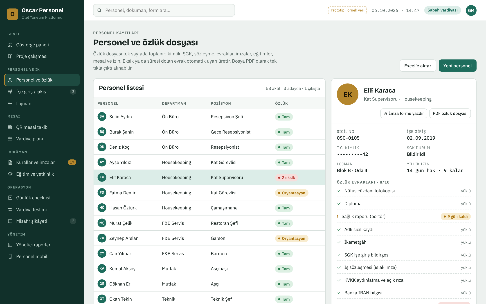
Personel ve özlük. Solda personel listesi ve özlük durumu, sağda seçili personelin dosyası.
05
İşe giriş ve işten çıkış süreci
Kim kullanır
İK, departman müdürü
Ne zaman
Her yeni personel ve her ayrılışta
Çıktı
Eksiksiz tamamlanmış süreç kaydı
Süreç ekranı bir pano gibidir. Her sütun bir adımdır, her kart bir personeldir. Kart, adımın şartları tamamlanınca bir sonraki sütuna geçer.
İşe giriş adımları
Aday ve evrak
Sözleşme ve SGK
Oryantasyon (3 gün)
İmzalar ve lojman
Aktif: QR mesai ve vardiya açılır
İşten çıkış adımları
Çıkış talebi (istifa / fesih)
Zimmet iadesi: kıyafet, kart, anahtar, cihaz
Lojman teslimi ve oda kontrolü
Son ücret, ibraname, SGK çıkışı
Arşiv
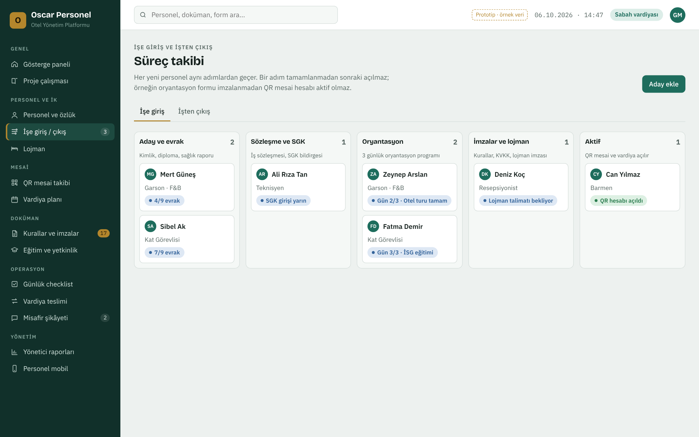
Süreç panosu. Hangi personelin hangi adımda beklediği tek bakışta görülür.
06
Doküman ve imza: dijital ve yazdırarak
Kim kullanır
Genel müdür yayınlar, İK takip eder, personel imzalar
Ne zaman
İşe girişte ve her doküman güncellemesinde
Çıktı
İmza matrisi, imzalı PDF veya tarama
Gönderdiğiniz 20 başlığın her biri sistemde ayrı bir dokümandır (OSC-EK-01 … OSC-EK-20). Oryantasyon formu, bilgilendirme formu, lojman talimatı, otel genel kuralları, KVKK aydınlatma, İSG tutanağı, zimmet formu ve kıyafet-hijyen talimatı da işe giriş formları olarak tutulur (OSC-F-01 … OSC-F-08).
Her dokümanın kodu, versiyonu, yürürlük tarihi ve "kimler imzalayacak" listesi vardır. Doküman güncellenince (ör. v2 → v3) ilgili herkesten yeniden imza istenir; eski imzalar geçmişte saklanır.
İki imza yolu
A · Telefonda dijital imza
Personele bildirim gelir: "2 doküman imza bekliyor".
Dokümanı telefonda okur.
"Okudum, anladım" kutusunu işaretler.
Parmağıyla imzalar.
Tarih, saat, cihaz ve IP bilgisiyle kaydedilir; imzalı PDF özlüğe eklenir.
B · Yazdır, kâğıda ıslak imza
Dokümanda Yazdır düğmesine basılır.
Çıktıda personelin adı, sicil no, departmanı ve belgeye özel QR kod basılı gelir.
Personel okur, tarih atar, ıslak imzalar.
İmzalı kâğıt taranır veya telefonla fotoğrafı çekilir, sisteme yüklenir.
Sistem QR koddan kimin hangi dokümanı imzaladığını bulur, durumu "Islak imza" yapar.
Hukuki not: İç talimat ve bilgilendirme belgelerinde dijital onay ve parmakla imza, tarih-saat-cihaz kaydıyla birlikte güçlü bir kayıt oluşturur. İş sözleşmesi ve ibraname gibi hukuki ağırlığı yüksek belgeler için ıslak imza (yazdır → imzalat → tara) veya nitelikli elektronik imza kullanılmalıdır. Hangi belgenin hangi yolla imzalanacağını iş hukuku danışmanınızla netleştirmenizi öneririz; sistem her doküman için izin verilen imza yolunu ayrı ayrı tanımlamaya izin verir.
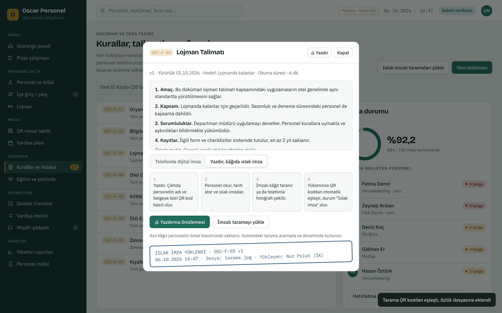
Doküman penceresi. Üstte "Yazdır" düğmesi, altta iki imza yolu arasında seçim. Burada ıslak imzalı tarama yüklenmiş ve belge eşleşmiş.
Yazdırma seçenekleri
Tek personel için: Adı ve bilgileri dolu tek sayfa.
İmza bekleyen herkes için (toplu): Dokümanı henüz imzalamamış her personel için ayrı sayfa. Örneğin 6 kişi bekliyorsa 6 sayfa çıkar.
Boş form: İsim alanı boş; elle doldurulmak üzere.
İki nüsha: İşaretlenirse her personel için "Personel nüshası" ve "Arşiv nüshası" olmak üzere iki sayfa basılır.
Toplu yazdırma, telefonu olmayan veya dijital imzaya alışık olmayan personel için özellikle kullanışlıdır: İK sabah çıktıları alır, departman şefi gün içinde imzalatır, akşam tek seferde taranıp yüklenir.
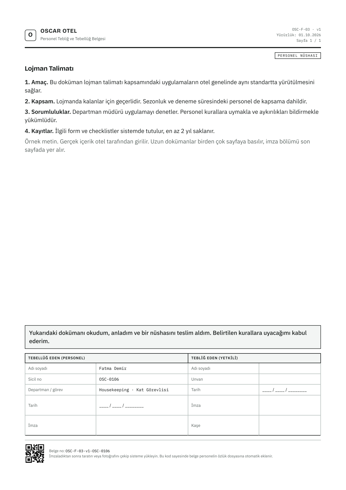
Basılan sayfa (A4). Doküman metni, beyan, personel ve yetkili imza alanları, en altta belgeye özel QR kod.
Sayfada neler var?
Otel adı, belge türü (Tebliğ-Tebellüğ Belgesi), doküman kodu, versiyon, yürürlük tarihi
Nüsha etiketi
Doküman metni (uzunsa birden çok sayfa; imza son sayfada)
Beyan: "Okudum, anladım, bir nüshasını teslim aldım"
Tebellüğ eden personel: ad soyad, sicil no, departman, tarih, imza
Tebliğ eden yetkili: ad soyad, unvan, tarih, imza, kaşe
QR kod ve belge numarası (ör. OSC-F-03-v1-OSC-0106)
Asıl kâğıt nerede durur? Islak imzalı orijinal personelin fiziksel özlük klasöründe saklanır. Sistemdeki tarama; arama, takip ve denetim içindir.
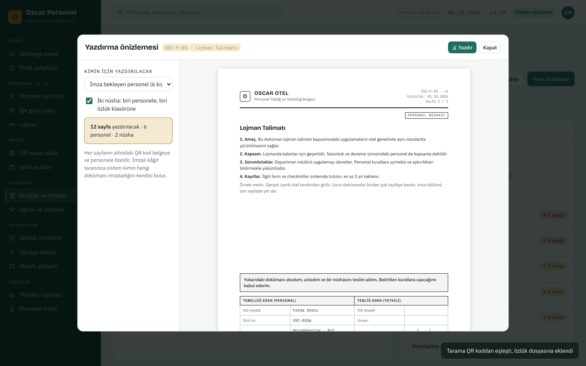
Yazdırma önizlemesi. Solda kimin için ve kaç nüsha basılacağı seçilir, sağda sayfalar baskıdaki haliyle görünür.
İmza takibi
Doküman ekranında her dokümanın kaç kişi tarafından imzalandığı, toplam imza oranı ve en çok imzası bekleyen personel görülür. Tek düğmeyle bekleyenlere SMS/bildirim hatırlatması gönderilir veya hepsi için toplu çıktı alınır.
İmza matrisi personel × doküman tablosudur. Her hücre dört durumdan birini gösterir: ✓ dijital imza✎ ıslak imza (tarandı)↻ yeni versiyon bekliyor✗ imzalanmadı
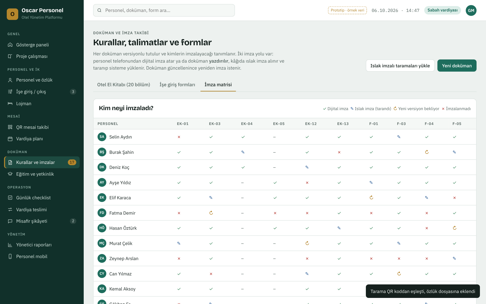
İmza matrisi. Denetimde "bu kuralı herkes imzaladı mı?" sorusunun cevabı.
07
QR ile mesai takibi
Kim kullanır
Tüm personel; şef ve İK izler
Ne zaman
Her giriş ve çıkışta
Çıktı
Günlük mesai listesi, aylık puantaj
Kiosk tabletPersonel girişine bir tablet konur. Ekranda her 15 saniyede değişen bir QR kod döner. Kod sürekli değiştiği için fotoğrafı çekilip başka yerden okutulamaz.
Personel okuturKendi telefonunda sisteme giriş yapmış personel kodu okutur. Telefon ilk kullanımda bir kez hesaba tanımlanır; başkasının telefonuyla okutma engellenir.
DoğrulamaSistem kodun geçerliliğine, otel Wi-Fi'ına veya konuma ve cihaza bakar. Üçü de uygunsa kayıt alınır.
Vardiyayla karşılaştırmaGiriş saati o günkü vardiya planıyla karşılaştırılır: zamanında, geç (kaç dakika), erken çıkış, fazla mesai otomatik hesaplanır.
Ay sonu puantajTüm kayıtlar aylık puantaja dönüşür ve bordro programına aktarılmak üzere Excel olarak alınır.
Telefonu olmayan personel için kişisel QR'lı yaka kartı verilir; kiosk tabletin kamerası kartı okur. Okutmayı unutan personel için şef, gerekçe yazarak elle kayıt girebilir; bu düzeltmeler raporda ayrıca listelenir.
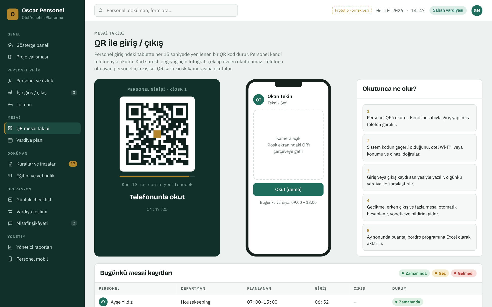
QR mesai ekranı. Solda kiosk, ortada personelin telefonu, sağda okutunca olanlar; altta günün mesai kayıtları.
08
Haftalık vardiya planı
Kim kullanır
Departman müdürü hazırlar, İK onaylar
Ne zaman
Her hafta, bir sonraki hafta için
Çıktı
Personelin telefonuna giden plan
Vardiya tipleri otel tarafından tanımlanır. Örnek: S 07–15, A 15–23, G 23–07, R 09–18, İzin.
Plan, departman bazında personel × gün tablosu olarak hazırlanır. "Geçen haftayı kopyala" ile birkaç dakikada biter.
Haftalık 45 saat sınırını aşan personel kırmızı işaretlenir; yayınlamadan önce düzeltilmesi istenir.
Yayınlanan plan personelin telefonuna bildirim olarak gider; personel kendi haftasını "Bu haftaki vardiyam" ekranında görür.
QR kayıtları bu planla karşılaştırılarak geç kalma ve fazla mesai hesaplanır.
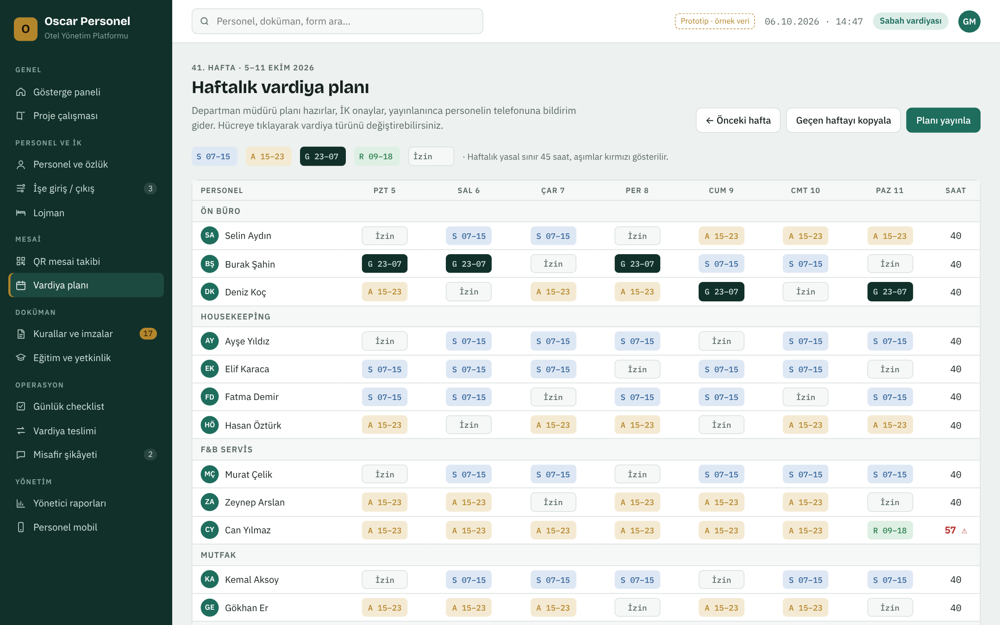
Vardiya planı. Hücreye tıklayınca vardiya türü değişir, sağdaki sütun haftalık saati gösterir.
09
Lojman
Kim kullanır
İK
Ne zaman
Yerleşimde, ayrılışta, aylık denetimde
Çıktı
Oda bazlı yerleşim ve denetim kaydı
Lojman ekranı blok ve oda bazında kimin kaldığını, boş yatakları, zimmetli eşyaları ve lojman talimatı imza durumunu gösterir. Aylık lojman denetimi sonucu (uygun / tutanak tutuldu) odaya işlenir. Personel işten ayrılırken lojman teslimi, çıkış sürecinin bir adımıdır.
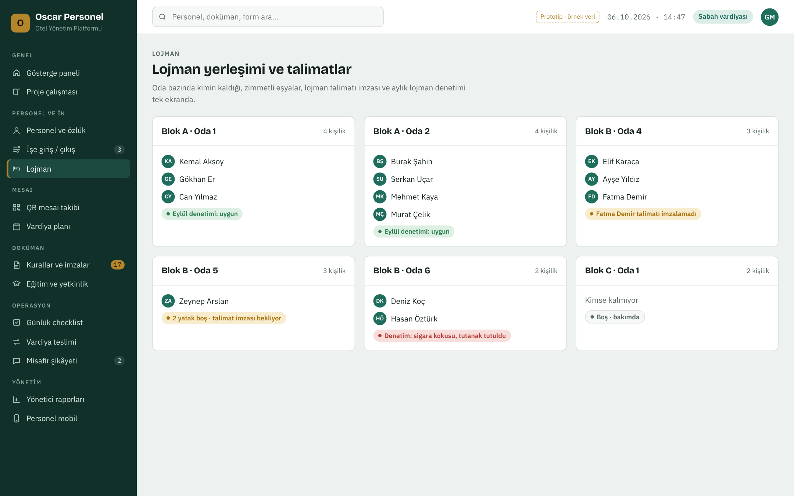
Lojman yerleşimi. Talimatı imzalamamış personel ve denetim notları oda kartında görünür.
10
Günlük checklistler ve vardiya teslimi
Günlük checklistler
Her departmanın kendi listeleri vardır: ön büro açılış, mutfak HACCP, housekeeping kat, güvenlik gece turu gibi. Listeler El Kitabı'ndaki "Form, Checklist ve Kayıt Sistemi" bölümüne göre tanımlanır.
Her madde, kimin ve hangi saatte işaretlediğiyle kaydedilir.
Bazı maddeler ölçüm (ör. soğuk oda °C) veya fotoğraf ister.
Saatinde tamamlanmayan liste departman müdürüne uyarı olarak düşer ve günlük rapora girer.
Kâğıt teslim defteri yerine standart bir form kullanılır: kasa devri, beklenen giriş/çıkışlar, açık işler, notlar. Teslim eden ve teslim alan iki taraf da onaylar. Açık işler bir sonraki vardiyaya görev olarak düşer; teslim alan onaylamazsa kayıt kırmızı kalır.
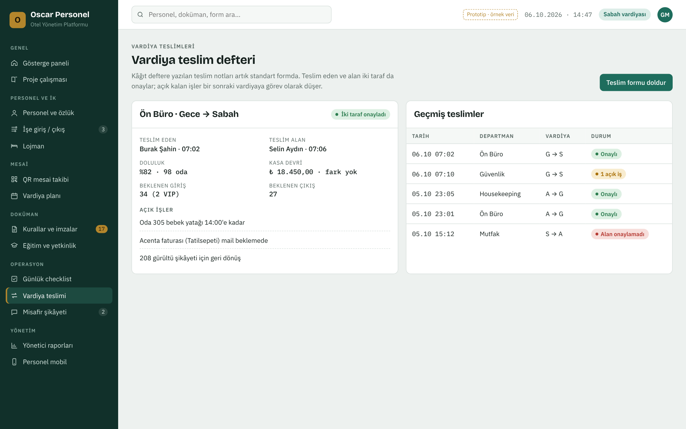
Vardiya teslim defteri. Solda son teslim, sağda geçmiş teslimler ve onay durumları.
11
Misafir şikâyetleri
Kim kullanır
Ön büro kaydeder, ilgili departman çözer
Ne zaman
Şikâyet geldiği an
Çıktı
Kategori analizi, aylık kök neden
Şikâyet; kaynağı (yüz yüze, telefon, Google/booking yorumu), kategorisi, sorumlu departmanı ve verilen telafiyle kaydedilir.
Misafire geri dönüş yapıldığı işaretlenmeden şikâyet kapatılamaz.
Son 30 günün kategori dağılımı ekranda görünür; tekrar eden konular aylık raporda kök neden analizine gider.
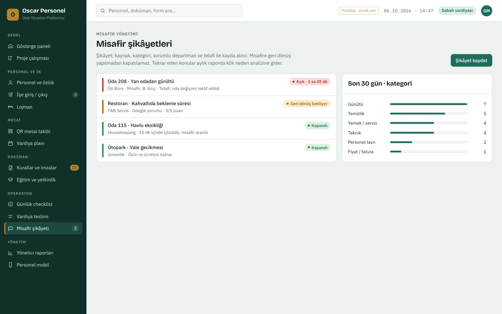
Misafir şikâyetleri. Açık, geri dönüş bekleyen ve kapanan şikâyetler; sağda kategori dağılımı.
12
Eğitim ve yetkinlik
Kim kullanır
İK planlar, şef puanlar
Ne zaman
İşe girişte ve geçerlilik süresi dolunca
Çıktı
Eğitim matrisi, katılım tutanakları
Zorunlu eğitimler (İSG, yangın ve tahliye, hijyen, KVKK, misafir ilişkileri) geçerlilik süresiyle izlenir.
Eğitim sonrası katılım tutanağı dijital veya yazdırılarak imzalanır.
Süresi dolan veya hiç alınmamış eğitimler kırmızı görünür ve uyarı üretir.
Departman şefi her personelin yetkinlik seviyesini 1–5 arasında puanlar.
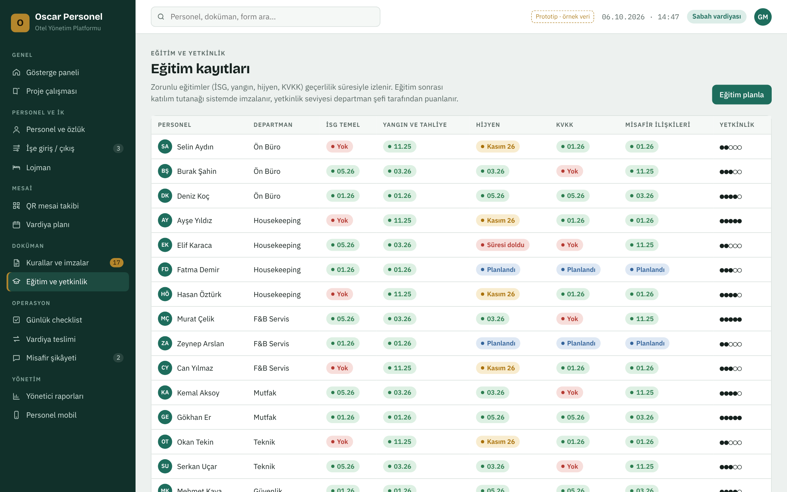
Eğitim matrisi. Her personel için eğitimlerin tarihi ve durumu, sağda yetkinlik seviyesi.
13
Yönetici raporları ve gösterge paneli
Gösterge paneli genel müdürün açılış ekranıdır: içerideki personel, geç kalan, imza bekleyen, checklist tamamlanma, süresi dolan belge ve açık şikâyet sayıları; departman bazlı uyum tablosu; "dikkat gerektirenler" listesi; son QR hareketleri ve vardiya teslim notları.
Günlük ve haftalık rapor sistemdeki kayıtlardan kendiliğinden dolar. Departman müdürü yalnızca yorum ve aksiyon ekleyip onaylar. Günlük rapor her sabah 08:30'da genel müdüre e-postayla gider.
Göstergeler
Kaynağı
Zamanında giriş oranı, geç kalma, fazla mesai
QR mesai + vardiya planı
Checklist tamamlanma oranı
Günlük checklistler
Vardiya teslim onay oranı
Vardiya teslimleri
Misafir şikâyeti sayısı ve kategorisi
Şikâyet kayıtları
Bekleyen imza, süresi dolan belge
Doküman ve özlük
Zorunlu eğitim tamamlanma
Eğitim kayıtları
Gösterge paneli. Kırmızı çizgili kartlar ve listeler hemen ilgilenilmesi gereken konulardır.
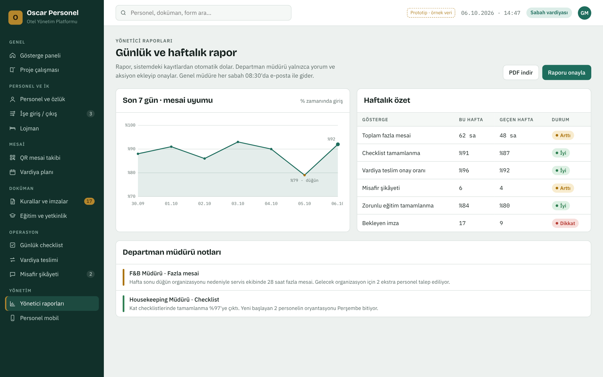
Yönetici raporu. Son 7 günün mesai uyumu, haftalık özet ve departman müdürlerinin notları.
14
Personelin telefonu
Personel sistemi yalnızca telefondan kullanır ve sadece kendi bilgilerini görür. Ana ekranda:
Bugünkü vardiyası ve giriş saati; QR okut düğmesi
İmza bekleyen dokümanlar ve Oku ve imzala düğmesi
Görevleri (checklistler, planlı eğitimler)
Bu haftaki vardiya planı, aylık mesai özeti, kalan yıllık izin, izin talebi
Vardiya teslim formu ve teslim alma onayı
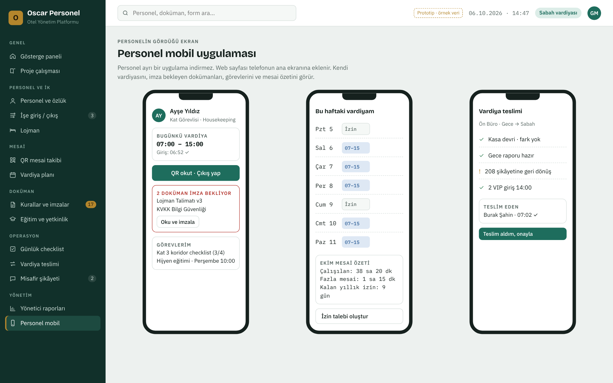
Personel ekranları. Ana sayfa, haftalık vardiya ve vardiya teslimi.
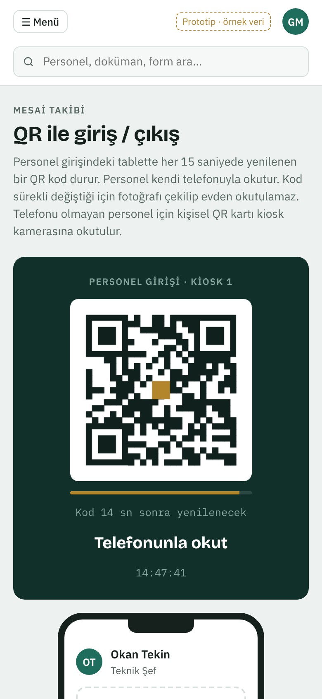
Telefonda QR mesai ekranı.
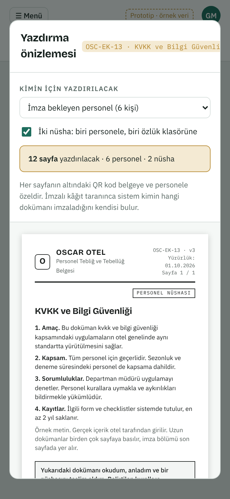
Yazdırma önizlemesi telefonda da açılır.
Bölüm 15
Otomatik uyarılar, yetkiler ve KVKK
Sistem kendiliğinden neleri bildirir?
Durum
Kime
Nasıl
Vardiya başladı, personel okutmadı
Departman şefi
Panel + bildirim
Haftalık plan 45 saati aşıyor
Departman müdürü, İK
Planda kırmızı uyarı
Yeni doküman / yeni versiyon yayınlandı
İmzalaması gereken personel
Telefon bildirimi, SMS
İmza 3 gündür bekliyor
Personel ve şefi
Hatırlatma
Sağlık raporu / sertifika 30 gün içinde bitiyor
İK
Panel + e-posta
Checklist saatinde tamamlanmadı
Departman müdürü
Panel + bildirim
Vardiya teslimi onaylanmadı
Her iki vardiyanın şefi
Panel
Şikâyete geri dönüş yapılmadı
Ön büro müdürü
Panel + bildirim
Kim neyi görür?
Alan
Genel Müdür
İK
Dep. Müdürü
Personel
Özlük dosyası
Tümü
Tümü
Ekibi (sınırlı)
Kendisi
Sağlık raporu, adli sicil
Görür
Yönetir
Görmez
Kendisi
Doküman yayınlama
Evet
Hazırlar
Hayır
Hayır
Islak imza taraması yükleme
Evet
Evet
Evet
Hayır
Vardiya planı
Görür
Onaylar
Hazırlar
Kendisi
Mesai kaydı düzeltme
Evet
Evet
Gerekçeyle
Hayır
Raporlar
Tümü
Tümü
Departmanı
Hayır
KVKK ve bilgi güvenliği
Sağlık raporu ve adli sicil kaydı özel nitelikli kişisel veridir; yalnızca yetkili rollere açıktır.
Sunucu Türkiye'de veya KVKK'ya uygun bir yerde barındırılır, veriler şifreli saklanır ve düzenli yedeklenir.
Her özlük görüntüleme ve değişiklik "kim, ne zaman" olarak loglanır.
Personel işe girişte KVKK aydınlatma metnini imzalar; saklama süreleri tanımlıdır, süresi dolan veriler arşivlenir veya silinir.
QR mesai için konum yalnızca okutma anında, otelde olup olmadığını doğrulamak için kullanılır; sürekli konum takibi yapılmaz.
Bölüm 16
Haftalık ve aylık döngü
Her hafta
Perşembe: Departman müdürleri gelecek haftanın vardiya planını hazırlar.
Cuma: İK onaylar, plan yayınlanır, personele bildirim gider.
Pazartesi: Haftalık yönetici raporu genel müdüre gider.
Bekleyen imzalar için toplu çıktı alınır, imzalatılıp taranır.
Her ay
Ayın son günü: Aylık puantaj kapatılır, bordroya Excel olarak aktarılır.
Lojman denetimi yapılır, sonuçlar işlenir.
Süresi dolacak evrak ve eğitimler planlanır.
Şikâyet kategorileri için kök neden toplantısı.
İç denetim: El Kitabı bölümlerinden biri seçilip uygulama kontrol edilir.
Doküman güncellendiğinde
Genel müdür yeni versiyonu yükler, değişiklik notunu yazar, yayınlar.
Sistem eski imzaları "yeni versiyon bekliyor" durumuna çeker.
İlgili personele bildirim gider; telefonu olmayanlar için İK toplu çıktı alır.
İmza matrisi tamamen yeşile dönene kadar takip edilir.
Son kontrol: otel her gün çalışır durumda mı?
Gün sonunda gösterge paneli tek soruya cevap verir: vardiyalar dolu mu, kurallar imzalı mı, checklistler tamam mı, teslimler onaylı mı, şikâyetlere dönüldü mü? Kırmızı bir kart yoksa otel o gün standartta çalışmıştır.
Bölüm 17
Sistemi hayata geçirme
Geçiş adımları
TanımlarDepartmanlar, pozisyonlar, vardiya tipleri, roller ve kullanıcılar girilir.
Mevcut personelin aktarımıPersonel listesi Excel'den toplu yüklenir. Mevcut özlük evrakları taranıp ilgili personele eklenir.
Dokümanların yüklenmesiEl Kitabı'nın 20 bölümü ve 8 işe giriş formu sisteme girilir, her biri için kimlerin imzalayacağı belirlenir.
İlk imza turuTüm personelden zorunlu dokümanlar için imza alınır. Telefonu olanlar dijital, olmayanlar toplu çıktıyla ıslak imza.
Kiosk kurulumuPersonel girişine tablet konur, otel Wi-Fi'ı tanımlanır, personelin telefonları ilk okutmada eşleşir, gerekenlere QR kart basılır.
Pilotİlk iki hafta bir departmanla (ör. Ön Büro) denenir, geri bildirime göre düzeltilir, sonra tüm otele açılır.
Yol haritası (tahmini)
Faz
Süre
Kapsam
Faz 1 · Temel
~4 hafta
Personel kaydı ve özlük, doküman ve imza (dijital + yazdır/ıslak imza), QR mesai ve kiosk, rol ve yetkiler
Faz 2 · Vardiya
~3 hafta
Haftalık shift planı, puantaj ve bordro aktarımı, işe giriş/çıkış süreci, lojman
Faz 3 · Operasyon
~3 hafta
Günlük checklistler, vardiya teslimi, misafir şikâyeti
Faz 4 · Raporlama
~3 hafta
Eğitim ve yetkinlik, yönetici raporları, iç denetim
Netleştirilmesi gerekenler
Kaç personel ve kaç departman var? Sezonluk dalgalanma ne kadar?
Personel girişi kaç noktadan? Kaç kiosk tableti gerekir?
Personelin ne kadarının akıllı telefonu var? (Islak imza ve QR kart ihtiyacını belirler.)
Bordro hangi programla yapılıyor (Logo, Mikro, Netsis, muhasebe firması)?
20 bölümün metinleri hazır mı, yoksa sistemle birlikte mi yazılacak?
Hangi belgeler mutlaka ıslak imzalı olmalı? (İş hukuku danışmanıyla.)
Tek otel mi, ileride birden fazla tesis mi?
Arayüz yalnızca Türkçe mi, yabancı personel için İngilizce de gerekli mi?